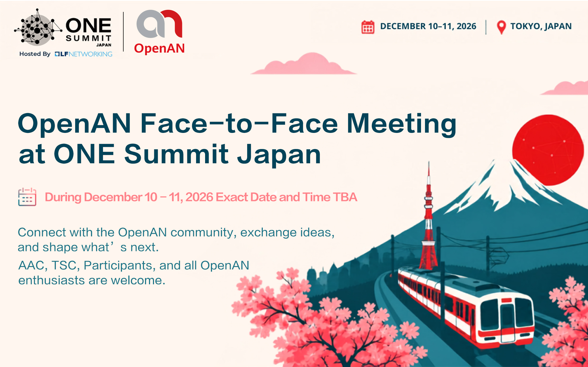

Event · October 10, 2026 · by OpenAN

The OpenAN community is going face to face! On December 11, 2026, the Adopter Advisory Committee (AAC) and the Technical Steering Committee (TSC) will co-host a joint F2F meeting, held alongside ONE Summit 2026 (Open Networking & Edge Summit) in Tokyo — LF Networking's flagship gathering for open networking, edge, and AI-native innovation.
After a year of new releases, new participants, and growing ecosystem momentum, it's time to get everyone in the same room: to celebrate what we've built together in 2026, and to chart the course for 2027.
Everyone is welcome! Whether you steer the project or have just started exploring it, your voice matters in this conversation. Who is expected to attend:
The meeting is intended to bring community members and partners together to:
Have a topic you'd love to see on the agenda? A question about logistics? Or just want to say "see you there"? We'd love to hear from you.
Leave a Comment on the Wiki